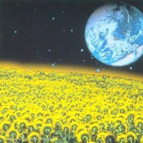

Sur cette compilation se trouvent de magnifiques musiques d’artistes mythiques comme Dead Can Dance, Cocteau Twins ou encore Harold BUDD. Figurent aussi des artistes moins connus, mais tout aussi talentueux, comme Raphaël ou Tim STORY (que l’on retrouvent par 2 fois). Toutes les musiques ont été choisies par Max, ancien animateur sur Fun Radio, et force de reconnaître qu’il a très bon goût. C’est également lui qui s’est occupé du mix des morceaux. Musique de Nuit est un CD qui peut s’écouter des heures en boucle sans jamais lasser l’auditeur, l’enivrant d’harmonies célestes. L’atout majeur de Musique de Nuit est de faire découvrir au plus grand nombre des groupes méconnus en Europe du fait d’une distribution souvent chaotique. Un petit regret tout de même, le livret du CD qui est bien trop mince: on aurait aimé une documentation plus complète sur les différents artistes.
Compilation « Musiques de Nuit » [72′] , label Labels / Virgin France
